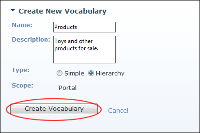

Creating a Vocabulary
How to create a new vocabulary using the Taxonomy Manager module. Note: Only the Description field can be edited once the vocabulary is saved.
- Navigate to Admin > Advanced Settings >
 Taxonomy - OR - Go to a Taxonomy Manager module.
Taxonomy - OR - Go to a Taxonomy Manager module.
- Click the Create New Vocabulary button located at the base of the Taxonomy Manager module. This opens the Create New Vocabulary page.
- In the Name text box, enter the name for this vocabulary.
- In the Description text box, enter the description of this vocabulary.
- At Type, select from this options:
- Simple: Select to create a flat list.
- Hierarchy: Select to hierarchical tree list.
- At Scope, Portal is preselected. This confirms that the vocabulary is only available to this site.
- Click the Create Vocabulary button. You can now add terms to this vocabulary. See "Adding the First Term (Hierarchical Vocabulary)"

Creating a Vocabulary